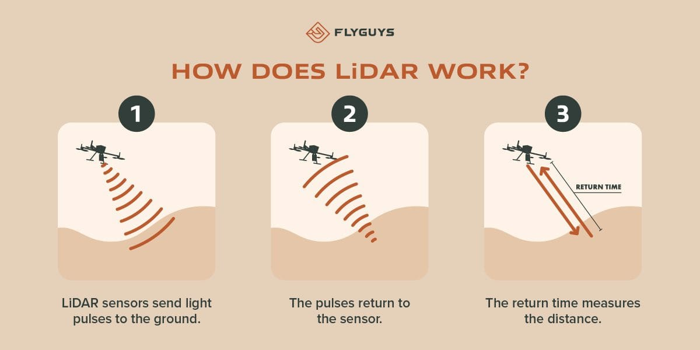
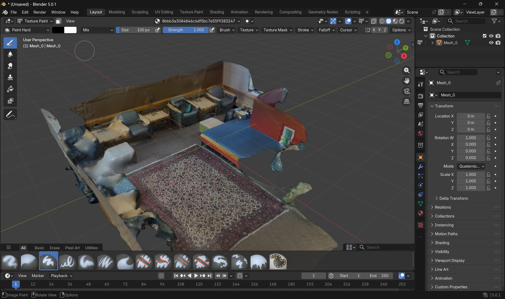
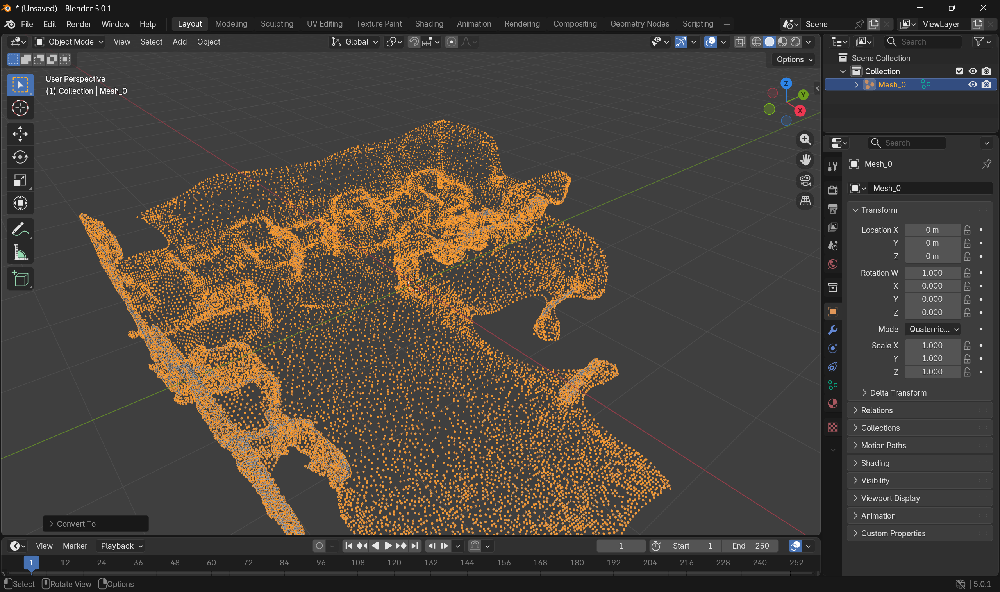

Autonomous Cars: The Role of LiDAR
This project explores the technical implementation of Light Detection and Ranging (LiDAR) in autonomous vehicles and deconstructs the ethical and social implications of removing the human driver from the loop.
Technical Exploration: LiDAR
Autonomous cars achieve "self-driving" status by employing a wide array of sensors for object detection and area mapping. A core component is LiDAR, which emits millions of light pulses and calculates distance based on the time it takes for those pulses to bounce back. These individual pulses generate "point clouds"—massive 3D data sets that create a detailed map of the vehicle's surroundings.

Figure 1: How LiDAR pulses calculate distance.
Prototype: Mobile LiDAR Scanning
For the exploration, we used an iPhone Pro's LiDAR sensor to scan physical environments. While less powerful than a Waymo vehicle's array, it demonstrates how point clouds are generated and translated into 3D models using software like Blender.


Point cloud generation and spatial manipulation in Blender.
Exploration Material: Access the LiDAR data scan on GitHub.
Philosophical Deconstruction
In-Class Approach: Utilitarianism
During class, we explored Utilitarianism, which asserts that the most ethical choice is the one producing the greatest good for the greatest number. In autonomous driving, this applies to "forced-choice" scenarios like the Trolley Problem, where software might treat human lives as numerical values to be preserved. This shaped my thinking regarding how companies like Waymo might justify massive data collection as a "common good" for safety.
Extended Approach: Actor-Network Theory (ANT)
Beyond class materials, I looked at Actor-Network Theory (ANT). ANT suggests that agency is not held by one person, but distributed across a network of humans, hardware, software, and infrastructure. This challenges the "fallacy" of blaming a human driver for not taking control quickly enough; if the car (the network) fails to provide situational awareness, the entire network has failed.
Discussion Reflection
My in-class discussion focused on whether or not it is ethically sound for autononous cars to treat lives as numerical values. Hudson made me think about how if lives were not treated as numerical values, there would be a lot of bias introduced. Additionally, reflecting on Nora and Yahvi's research on Tinder/dating app Algorithms, I realized that the biases in LiDAR's object detection datasets mirror the social inequalities and biases in dating app algorithms.
Prepared Discussion Questions
- Is it ethically sound for a car's software to treat human lives as "numerical values"?
- Does the ANT perspective make it harder or easier to establish legal accountability?
- What unique "human" quality of driving is lost in the transition to machine sensors?
References
Ethics Unwrapped. (n.d.). Utilitarianism. University of Texas at Austin. https://ethicsunwrapped.utexas.edu/glossary/utilitarianism
Simply Psychology. (2023). Actor-Network Theory (ANT). https://www.simplypsychology.org/actor-network-theory.html